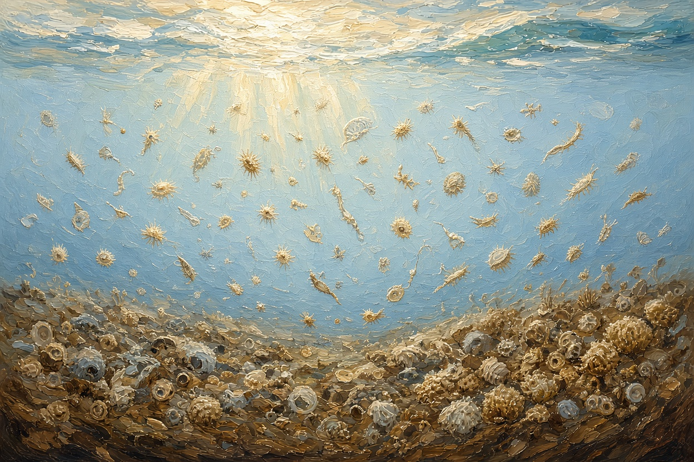
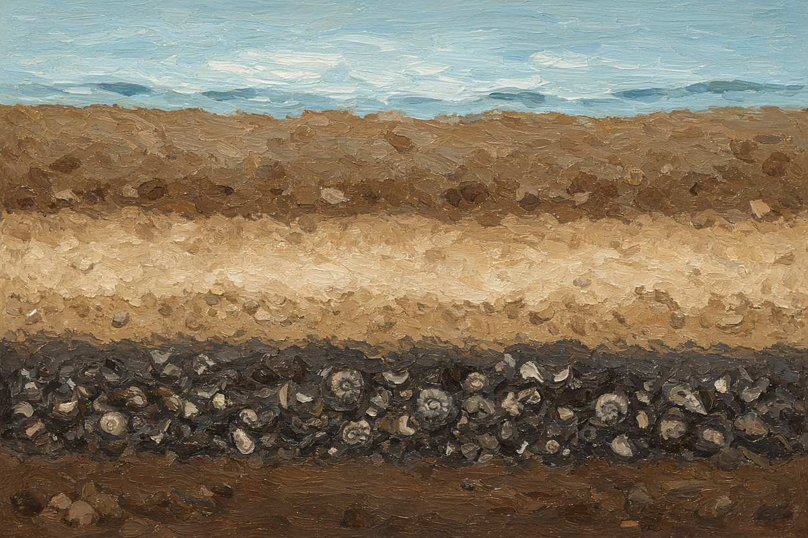
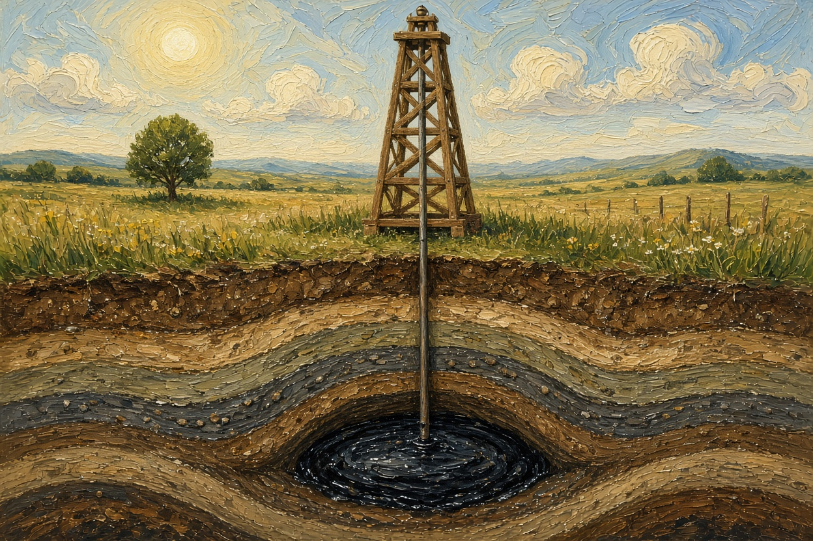

Oil, step by stepThe steps that make oilהנפט צעד אחר צעדהשלבים שבהם נוצר הנפט
By the end of this page, put the steps that make oil in order.By the end of this page, order the steps by which crude oil forms.בסוף העמוד תוכלו לסדר את הצעדים שבהם נוצר הנפט.בסוף העמוד תוכלו לסדר לפי הסדר את השלבים שבהם נוצר הנפט הגולמי.
Oil did not appear all at once. It formed slowly, in three steps.Crude oil did not appear in a moment. It formed slowly, in three steps under the sea.הנפט לא הופיע בבת אחת. הוא נוצר לאט, בשלושה צעדים.הנפט הגולמי לא הופיע ברגע אחד. הוא נוצר לאט, בשלושה שלבים מתחת לים.

1. Sea creatures that lived a very long time ago died and sank to the bottom of the sea.1. Creatures that lived in the sea a very long time ago died, and they sank down to the sea floor.1. יצורים שחיו בים לפני המון שנים מתו ושקעו לקרקעית.1. יצורים שחיו בים לפני שנים רבות מאוד מתו, ושקעו אל קרקעית הים.

2. Over many years, a lot of mud piled on top of them. Air could not reach them, and they changed.2. For years, thick mud built up over them. No air could reach them, so they changed.2. במשך שנים נערם עליהם הרבה בוץ. אוויר לא הגיע אליהם, והם השתנו.2. במשך שנים רבות נערם עליהם בוץ רב. אוויר לא הגיע אליהם, ולכן הם השתנו.

3. After a very long time, heat and heavy pressure turned what was left of them into a thick black liquid. That is crude oil.3. After a great many years, high heat and strong pressure turned those remains into a thick black liquid: crude oil.3. אחרי המון שנים, חום ולחץ חזק הפכו את מה שנשאר מהם לנוזל שחור וסמיך. זה הנפט הגולמי.3. כעבור שנים רבות מאוד, חום גבוה ולחץ כבד הפכו את שרידי היצורים לנוזל שחור וסמיך: הנפט הגולמי.